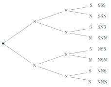
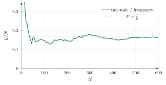

Practice: Computing Classical ProbabilitiesThực hành tính xác suất
Grade 10 · Topic: Classical ProbabilityLớp 10 · Chủ đề: Xác suất theo định nghĩa cổ điển
1Lesson IntroductionGiới thiệu bài học
Learning goalsMục tiêu bài học
By the end of this lesson you can:
Sau bài học này, em có thể:
list the outcomes of an experiment with tables and tree diagrams;
liệt kê kết quả của phép thử bằng bảng, sơ đồ hình cây;
compute probabilities by listing and by combinations;
tính xác suất bằng phương pháp liệt kê và bằng tổ hợp;
run or read a simulation and compare the experimental frequency with the probability;
thực hiện hoặc đọc kết quả mô phỏng, so sánh tần suất thực nghiệm với xác suất;
analyse simple games of chance.
phân tích các trò chơi may rủi đơn giản.
2Mathematical VocabularyTừ vựng Toán học
experimental frequency – the number of times an event occurs divided by the number of trials.
tần suất thực nghiệm – số lần biến cố xảy ra chia cho số lần thử.
simulation – imitating a random experiment many times (with a computer or a spreadsheet).
mô phỏng – bắt chước một phép thử ngẫu nhiên nhiều lần (bằng máy tính, bảng tính).
equally likely – having the same chance of occurring.
đồng khả năng – có cùng khả năng xảy ra.
3Useful English PhrasesCụm từ tiếng Anh thường gặp
Draw a tree with three levels.
Vẽ sơ đồ cây ba tầng.
Each branch is equally likely.
Mỗi nhánh đồng khả năng.
The experimental frequency gets closer to the probability.
Tần suất thực nghiệm tiến gần đến xác suất.
We repeated the experiment six hundred times.
Chúng ta lặp lại phép thử 600 lần.
The game is not fair.
Trò chơi không công bằng.
4Prerequisite ReviewÔn tập kiến thức nền
From Bài 26: \(P(A)=\dfrac{n(A)}{n(\Omega)}\), \(P(\overline A)=1-P(A)\). From Bài 23: tree diagrams.
Từ Bài 26: \(P(A)=\dfrac{n(A)}{n(\Omega)}\), \(P(\overline A)=1-P(A)\). Từ Bài 23: sơ đồ hình cây.
5TheoryLý thuyết
5.1 Listing outcomesLiệt kê kết quả
ToolsCông cụ
Table for two stages (two dice, a coin and a die).
Bảng cho phép thử hai bước (hai xúc xắc, một đồng xu và một xúc xắc).
Tree diagram for several stages (three coins, three children).
Sơ đồ cây cho phép thử nhiều bước (ba đồng xu, ba người con).
Combinations when the list is too long (drawing balls, choosing people).
Tổ hợp khi danh sách quá dài (lấy cầu, chọn người).

5.2 Simulation and experimental frequencyMô phỏng và tần suất thực nghiệm
IdeaÝ tưởng
Repeat an experiment \(N\) times; if \(A\) occurs \(k\) times, its experimental frequency is \(\dfrac kN\). When \(N\) is large, \(\dfrac kN\) is usually close to \(P(A)\) (but rarely equal to it).
Lặp lại phép thử \(N\) lần; nếu \(A\) xảy ra \(k\) lần thì tần suất thực nghiệm là \(\dfrac kN\). Khi \(N\) lớn, \(\dfrac kN\) thường gần \(P(A)\) (nhưng hiếm khi bằng đúng).

Watch out!Lưu ý
A simulation never proves a probability; it only estimates it. "After 5 tails, a head is more likely" is false: the coin has no memory.
Mô phỏng không chứng minh xác suất mà chỉ ước lượng. "Sau 5 lần ngửa thì lần sau dễ ra sấp hơn" là sai: đồng xu không có trí nhớ.
6Worked ExamplesVí dụ có lời giải
ExampleVí dụ 1BasicCơ bản – Three coinsBa đồng xu
A coin is tossed three times. Find the probability of exactly two heads, and of at least one head.
Gieo một đồng xu ba lần. Tính xác suất có đúng hai lần sấp, và có ít nhất một lần sấp.
Analysis: Use the tree: 8 outcomes.
Phân tích: Dùng sơ đồ cây: 8 kết quả.
Exactly two heads: \(SSN, SNS, NSS\): \(\frac38\).
Đúng hai lần sấp: \(SSN, SNS, NSS\): \(\frac38\).
At least one head: \(1-P(NNN)=1-\frac18\).
Ít nhất một lần sấp: \(1-P(NNN)=1-\frac18\).
\(\dfrac38\) and \(\dfrac78\).
\(\dfrac38\) và \(\dfrac78\).
ExampleVí dụ 2BasicCơ bản – An even productTích chẵn
Two dice are rolled. Find the probability that the product of the numbers is even.
Gieo hai con xúc xắc. Tính xác suất tích số chấm là số chẵn.
Analysis: Complement: the product is odd \(\iff\) both numbers odd.
Phân tích: Biến cố đối: tích lẻ \(\iff\) cả hai số đều lẻ.
Both odd: \(3\cdot3=9\) outcomes.
Cả hai lẻ: \(3\cdot3=9\) kết quả.
\(P=1-\frac9{36}=\frac{27}{36}\).
\(P=1-\frac9{36}=\frac{27}{36}\).
\(\dfrac34\).
\(\dfrac34\).
ExampleVí dụ 3IntermediateTrung bình – Three childrenGia đình ba con
A family has three children; assume boy and girl are equally likely and independent. Find the probability of at least two girls.
Một gia đình có ba con; giả sử khả năng sinh con trai, con gái như nhau và độc lập. Tính xác suất có ít nhất hai con gái.
Analysis: Same tree as three coins (G/B).
Phân tích: Cùng sơ đồ cây với ba đồng xu (G/T).
Two girls: 3 outcomes; three girls: 1 outcome.
Hai con gái: 3 kết quả; ba con gái: 1 kết quả.
\(\dfrac48=\dfrac12\).
\(\dfrac48=\dfrac12\).
ExampleVí dụ 4IntermediateTrung bình – An even sum of two cardsTổng chẵn của hai thẻ
Nine cards are numbered 1–9. Two cards are drawn. Find the probability that the sum is even.
Có 9 tấm thẻ đánh số từ 1 đến 9. Rút ngẫu nhiên hai thẻ. Tính xác suất tổng hai số là số chẵn.
Analysis: Even sum: both odd or both even.
Phân tích: Tổng chẵn: hai số cùng lẻ hoặc cùng chẵn.
\(n(\Omega)=C_9^2=36\); both odd \(C_5^2=10\), both even \(C_4^2=6\).
\(n(\Omega)=C_9^2=36\); cùng lẻ \(C_5^2=10\), cùng chẵn \(C_4^2=6\).
\(\dfrac{16}{36}=\dfrac49\).
\(\dfrac{16}{36}=\dfrac49\).
ExampleVí dụ 5AdvancedNâng cao – Is the game fair?Trò chơi có công bằng không?
Two players roll two dice. An wins if the sum is 7; Bình wins if the sum is 2, 3 or 12. Who is more likely to win? Check with the simulation idea.
Hai bạn gieo hai con xúc xắc. An thắng nếu tổng bằng 7; Bình thắng nếu tổng bằng 2, 3 hoặc 12. Bạn nào có khả năng thắng cao hơn? Kiểm tra bằng ý tưởng mô phỏng.
Analysis: Count in the 36-cell table.
Phân tích: Đếm trong bảng 36 ô.
Sum 7: 6 outcomes, \(P=\frac6{36}\).
Tổng 7: 6 kết quả, \(P=\frac6{36}\).
Sums 2, 3, 12: \(1+2+1=4\) outcomes, \(P=\frac4{36}\).
Tổng 2, 3, 12: \(1+2+1=4\) kết quả, \(P=\frac4{36}\).
In 360 rounds we expect about 60 wins for An and 40 for Bình.
Trong 360 ván, dự kiến An thắng khoảng 60 ván, Bình khoảng 40 ván.
An is more likely to win: the game is not fair.
An có khả năng thắng cao hơn: trò chơi không công bằng.
7PracticeBài tập luyện tập
A. Multiple ChoiceA. Trắc nghiệm nhiều lựa chọn
Two dice are rolled. P(the larger number is 4) =…
Gieo hai con xúc xắc. Xác suất số chấm lớn nhất bằng 4 là…
Answer: a. 7 outcomes.
Đáp án a. Có \(2\cdot4-1=7\) kết quả thuận lợi.
Two dice are rolled. P(the difference is 2) =…
Gieo hai con xúc xắc. Xác suất hiệu số chấm (lớn trừ nhỏ) bằng 2 là…
Answer: c. 8 outcomes.
Đáp án c. Có 8 cặp thỏa mãn.
5 students including An and Bình line up at random. P(An and Bình are adjacent) =…
5 học sinh, trong đó có An và Bình, xếp hàng ngẫu nhiên. Xác suất An và Bình đứng cạnh nhau là…
Answer: b. \(\dfrac{2(n-1)!}{n!}\).
Đáp án b. \(\dfrac{2\cdot(5-1)!}{5!}=\dfrac{2}{5}\).
B. True or FalseB. Đúng hoặc sai
Family with 3 children: P(all girls) = 1/8.
Gia đình 3 con: xác suất cả ba là con gái bằng \(\frac18\).
Use the 8-branch tree.
Dùng sơ đồ cây 8 nhánh.
After 1000 rolls the frequency of a six must be exactly 1/6.
Sau 1000 lần gieo, tần suất mặt 6 chấm phải đúng bằng \(\frac16\).
Frequency estimates probability.
Tần suất chỉ ước lượng xác suất, dao động quanh xác suất khi số lần thử lớn.
C. Short AnswerC. Trả lời ngắn
Two dice are rolled. How many outcomes give a sum of 9?
Gieo hai con xúc xắc. Có bao nhiêu kết quả cho tổng bằng 9?
Enter a number.
Nhập một số.
Count in the table.
Đếm trong bảng 36 ô.
A die is rolled 600 times. About how many sixes do we expect?
Gieo một con xúc xắc 600 lần. Dự kiến có khoảng bao nhiêu lần ra mặt 6?
Enter a number.
Nhập một số.
Expected count \(\approx N\cdot P\).
Số lần dự kiến \(\approx N\cdot P\).
A. Multiple ChoiceA. Trắc nghiệm nhiều lựa chọn
Two dice are rolled. P(the larger number is 5) =…
Gieo hai con xúc xắc. Xác suất số chấm lớn nhất bằng 5 là…
Answer: d. 9 outcomes.
Đáp án d. Có \(2\cdot5-1=9\) kết quả thuận lợi.
Two dice are rolled. P(the difference is 1) =…
Gieo hai con xúc xắc. Xác suất hiệu số chấm (lớn trừ nhỏ) bằng 1 là…
Answer: d. 10 outcomes.
Đáp án d. Có 10 cặp thỏa mãn.
6 students including An and Bình line up at random. P(An and Bình are adjacent) =…
6 học sinh, trong đó có An và Bình, xếp hàng ngẫu nhiên. Xác suất An và Bình đứng cạnh nhau là…
Answer: b. \(\dfrac{2(n-1)!}{n!}\).
Đáp án b. \(\dfrac{2\cdot(6-1)!}{6!}=\dfrac{1}{3}\).
B. True or FalseB. Đúng hoặc sai
Family with 3 children: P(exactly one boy) = 1/3.
Gia đình 3 con: xác suất có đúng một con trai bằng \(\frac13\).
Use the 8-branch tree.
Dùng sơ đồ cây 8 nhánh.
When the number of trials grows, the experimental frequency tends to get close to the probability.
Khi số lần thử tăng, tần suất thực nghiệm có xu hướng tiến gần đến xác suất.
Frequency estimates probability.
Tần suất chỉ ước lượng xác suất, dao động quanh xác suất khi số lần thử lớn.
C. Short AnswerC. Trả lời ngắn
Two dice are rolled. How many outcomes give a product of 12?
Gieo hai con xúc xắc. Có bao nhiêu kết quả cho tích bằng 12?
Enter a number.
Nhập một số.
Count in the table.
Đếm trong bảng 36 ô.
Two coins are tossed 300 times. About how many times do we expect two heads?
Gieo hai đồng xu 300 lần. Dự kiến có khoảng bao nhiêu lần cả hai đều sấp?
Enter a number.
Nhập một số.
Expected count \(\approx N\cdot P\).
Số lần dự kiến \(\approx N\cdot P\).
A. Multiple ChoiceA. Trắc nghiệm nhiều lựa chọn
Two dice are rolled. P(the larger number is 2) =…
Gieo hai con xúc xắc. Xác suất số chấm lớn nhất bằng 2 là…
Answer: a. 3 outcomes.
Đáp án a. Có \(2\cdot2-1=3\) kết quả thuận lợi.
Two dice are rolled. P(the difference is 3) =…
Gieo hai con xúc xắc. Xác suất hiệu số chấm (lớn trừ nhỏ) bằng 3 là…
Answer: c. 6 outcomes.
Đáp án c. Có 6 cặp thỏa mãn.
4 students including An and Bình line up at random. P(An and Bình are adjacent) =…
4 học sinh, trong đó có An và Bình, xếp hàng ngẫu nhiên. Xác suất An và Bình đứng cạnh nhau là…
Answer: b. \(\dfrac{2(n-1)!}{n!}\).
Đáp án b. \(\dfrac{2\cdot(4-1)!}{4!}=\dfrac{1}{2}\).
B. True or FalseB. Đúng hoặc sai
Family with 3 children: P(at least one boy) = 7/8.
Gia đình 3 con: xác suất có ít nhất một con trai bằng \(\frac78\).
Use the 8-branch tree.
Dùng sơ đồ cây 8 nhánh.
After 5 tails in a row, the next toss is more likely to be a head.
Sau 5 lần ngửa liên tiếp, lần gieo tiếp theo dễ ra mặt sấp hơn.
Frequency estimates probability.
Tần suất chỉ ước lượng xác suất, dao động quanh xác suất khi số lần thử lớn.
C. Short AnswerC. Trả lời ngắn
Two dice are rolled. How many outcomes have numbers differing by 1?
Gieo hai con xúc xắc. Có bao nhiêu kết quả mà hai số chấm hơn kém nhau 1?
Enter a number.
Nhập một số.
Count in the table.
Đếm trong bảng 36 ô.
Two dice are rolled 360 times. About how many times do we expect a sum of 7?
Gieo hai con xúc xắc 360 lần. Dự kiến có khoảng bao nhiêu lần tổng bằng 7?
Enter a number.
Nhập một số.
Expected count \(\approx N\cdot P\).
Số lần dự kiến \(\approx N\cdot P\).
D. Self-practice: Multiple ChoiceD. Tự luyện: trắc nghiệm
Two dice are rolled. P(the product equals 6) =…
Gieo hai con xúc xắc. Xác suất để tích số chấm bằng 6 là…
Answer: b. List the table of 36 outcomes.
Đáp án b. Lập bảng 36 kết quả; có 4 kết quả thuận lợi.
Two dice are rolled. P(the difference of the numbers is 4) =…
Gieo hai con xúc xắc. Xác suất hiệu (lớn trừ nhỏ) số chấm bằng 4 là…
Answer: b. Count pairs \((a,b)\) with \(|a-b|=4\).
Đáp án b. Đếm các cặp \((a,b)\) có \(|a-b|=4\): 4 cặp.
Two dice are rolled. P(the larger number is 3) =…
Gieo hai con xúc xắc. Xác suất số chấm lớn nhất bằng 3 là…
Answer: a. Count the cells of the table.
Đáp án a. Đếm trong bảng 36 ô: có 5 kết quả thuận lợi.
Two dice are rolled. P(the sum is at least 7) =…
Gieo hai con xúc xắc. Xác suất tổng số chấm không nhỏ hơn 7 là…
Answer: c. Count the table entries.
Đáp án c. Đếm trong bảng: 21 kết quả.
Two different numbers are chosen at random from \(1,2,\dots,6\). P(their sum is even) =…
Chọn ngẫu nhiên hai số khác nhau từ \(1,2,\dots,6\). Xác suất tổng hai số là số chẵn là…
Answer: a. Even sum: both even or both odd.
Đáp án a. Tổng chẵn khi hai số cùng chẵn hoặc cùng lẻ: \(6\) cặp trên \(C_{6}^2=15\).
5 students, including An and Bình, line up in a random order. P(An and Bình stand next to each other) =…
5 học sinh, trong đó có An và Bình, xếp hàng ngang ngẫu nhiên. Xác suất An và Bình đứng cạnh nhau là…
Answer: b. \(\dfrac{2\cdot(5-1)!}{5!}\).
Đáp án b. \(\dfrac{2\cdot(5-1)!}{5!}=\dfrac2{5}\).
20 cards are numbered 1 to 20. One card is drawn. P(the number is a perfect square) =…
Có 20 tấm thẻ đánh số từ 1 đến 20. Rút ngẫu nhiên một thẻ. Xác suất số trên thẻ là số chính phương là…
Answer: c. Favourable: 1, 4, 9, 16.
Đáp án c. Các số thuận lợi: 1, 4, 9, 16 (4 số).
A die is rolled 100 times by simulation. Theoretically, about how many times do we expect the event of probability \dfrac{1}{2} to occur?
Mô phỏng gieo xúc xắc 100 lần. Về lí thuyết, biến cố có xác suất \dfrac{1}{2} xảy ra khoảng bao nhiêu lần?
Answer: c. Expected count \(\approx N\cdot P\).
Đáp án c. Số lần dự kiến \(\approx N\cdot P=100\cdot\dfrac{1}{2}\); tần suất thực nghiệm dao động quanh xác suất.
D. Self-practice: Multiple ChoiceD. Tự luyện: trắc nghiệm
Two dice are rolled. P(the product is odd) =…
Gieo hai con xúc xắc. Xác suất để tích số chấm là số lẻ là…
Answer: b. List the table of 36 outcomes.
Đáp án b. Lập bảng 36 kết quả; có 9 kết quả thuận lợi.
Two dice are rolled. P(the difference of the numbers is 1) =…
Gieo hai con xúc xắc. Xác suất hiệu (lớn trừ nhỏ) số chấm bằng 1 là…
Answer: c. Count pairs \((a,b)\) with \(|a-b|=1\).
Đáp án c. Đếm các cặp \((a,b)\) có \(|a-b|=1\): 10 cặp.
Two dice are rolled. P(the smaller number is 4) =…
Gieo hai con xúc xắc. Xác suất số chấm nhỏ nhất bằng 4 là…
Answer: d. Count the cells of the table.
Đáp án d. Đếm trong bảng 36 ô: có 5 kết quả thuận lợi.
Two dice are rolled. P(the sum is at least 8) =…
Gieo hai con xúc xắc. Xác suất tổng số chấm không nhỏ hơn 8 là…
Answer: b. Count the table entries.
Đáp án b. Đếm trong bảng: 15 kết quả.
Two different numbers are chosen at random from \(1,2,\dots,12\). P(their sum is even) =…
Chọn ngẫu nhiên hai số khác nhau từ \(1,2,\dots,12\). Xác suất tổng hai số là số chẵn là…
Answer: a. Even sum: both even or both odd.
Đáp án a. Tổng chẵn khi hai số cùng chẵn hoặc cùng lẻ: \(30\) cặp trên \(C_{12}^2=66\).
7 students, including An and Bình, line up in a random order. P(An and Bình stand next to each other) =…
7 học sinh, trong đó có An và Bình, xếp hàng ngang ngẫu nhiên. Xác suất An và Bình đứng cạnh nhau là…
Answer: b. \(\dfrac{2\cdot(7-1)!}{7!}\).
Đáp án b. \(\dfrac{2\cdot(7-1)!}{7!}=\dfrac2{7}\).
12 cards are numbered 1 to 12. One card is drawn. P(the number is a perfect square) =…
Có 12 tấm thẻ đánh số từ 1 đến 12. Rút ngẫu nhiên một thẻ. Xác suất số trên thẻ là số chính phương là…
Answer: a. Favourable: 1, 4, 9.
Đáp án a. Các số thuận lợi: 1, 4, 9 (3 số).
A die is rolled 100 times by simulation. Theoretically, about how many times do we expect the event of probability \dfrac{1}{6} to occur?
Mô phỏng gieo xúc xắc 100 lần. Về lí thuyết, biến cố có xác suất \dfrac{1}{6} xảy ra khoảng bao nhiêu lần?
Answer: b. Expected count \(\approx N\cdot P\).
Đáp án b. Số lần dự kiến \(\approx N\cdot P=100\cdot\dfrac{1}{6}\); tần suất thực nghiệm dao động quanh xác suất.
D. Self-practice: Multiple ChoiceD. Tự luyện: trắc nghiệm
Two dice are rolled. P(the product is even) =…
Gieo hai con xúc xắc. Xác suất để tích số chấm là số chẵn là…
Answer: b. List the table of 36 outcomes.
Đáp án b. Lập bảng 36 kết quả; có 27 kết quả thuận lợi.
Two dice are rolled. P(the difference of the numbers is 0) =…
Gieo hai con xúc xắc. Xác suất hiệu (lớn trừ nhỏ) số chấm bằng 0 là…
Answer: a. Count pairs \((a,b)\) with \(|a-b|=0\).
Đáp án a. Đếm các cặp \((a,b)\) có \(|a-b|=0\): 6 cặp.
Two dice are rolled. P(the smaller number is 5) =…
Gieo hai con xúc xắc. Xác suất số chấm nhỏ nhất bằng 5 là…
Answer: b. Count the cells of the table.
Đáp án b. Đếm trong bảng 36 ô: có 3 kết quả thuận lợi.
Two dice are rolled. P(the sum is at least 11) =…
Gieo hai con xúc xắc. Xác suất tổng số chấm không nhỏ hơn 11 là…
Answer: d. Count the table entries.
Đáp án d. Đếm trong bảng: 3 kết quả.
Two different numbers are chosen at random from \(1,2,\dots,7\). P(their sum is even) =…
Chọn ngẫu nhiên hai số khác nhau từ \(1,2,\dots,7\). Xác suất tổng hai số là số chẵn là…
Answer: b. Even sum: both even or both odd.
Đáp án b. Tổng chẵn khi hai số cùng chẵn hoặc cùng lẻ: \(9\) cặp trên \(C_{7}^2=21\).
8 students, including An and Bình, line up in a random order. P(An and Bình stand next to each other) =…
8 học sinh, trong đó có An và Bình, xếp hàng ngang ngẫu nhiên. Xác suất An và Bình đứng cạnh nhau là…
Answer: b. \(\dfrac{2\cdot(8-1)!}{8!}\).
Đáp án b. \(\dfrac{2\cdot(8-1)!}{8!}=\dfrac2{8}\).
12 cards are numbered 1 to 12. One card is drawn. P(the number is a prime number) =…
Có 12 tấm thẻ đánh số từ 1 đến 12. Rút ngẫu nhiên một thẻ. Xác suất số trên thẻ là số nguyên tố là…
Answer: c. Favourable: 2, 3, 5, 7, 11.
Đáp án c. Các số thuận lợi: 2, 3, 5, 7, 11 (5 số).
A die is rolled 50 times by simulation. Theoretically, about how many times do we expect the event of probability \dfrac{1}{2} to occur?
Mô phỏng gieo xúc xắc 50 lần. Về lí thuyết, biến cố có xác suất \dfrac{1}{2} xảy ra khoảng bao nhiêu lần?
Answer: d. Expected count \(\approx N\cdot P\).
Đáp án d. Số lần dự kiến \(\approx N\cdot P=50\cdot\dfrac{1}{2}\); tần suất thực nghiệm dao động quanh xác suất.
8Common MistakesLỗi thường gặp
Forgetting the order in a tree. \(SSN\), \(SNS\), \(NSS\) are three different outcomes.
Bỏ qua thứ tự trong sơ đồ cây. \(SSN\), \(SNS\), \(NSS\) là ba kết quả khác nhau.
Expecting a simulation to give exactly the probability. It gives an estimate.
Mong mô phỏng cho đúng bằng xác suất. Mô phỏng chỉ cho giá trị ước lượng.
"Gambler's fallacy". Independent tosses do not remember the past.
"Ảo tưởng của người chơi". Các lần gieo độc lập không "nhớ" kết quả trước.
Listing outcomes that are not equally likely. "0, 1, 2, 3 heads" are not equally likely.
Liệt kê các kết quả không đồng khả năng. "0, 1, 2, 3 lần sấp" không đồng khả năng.
9Lesson SummaryTổng kết
Tables for 2 stages, trees for several stages, combinations for large counts.
Bảng cho phép thử 2 bước, sơ đồ cây cho nhiều bước, tổ hợp khi số lượng lớn.
\(P(A)=\dfrac{n(A)}{n(\Omega)}\); use the complement when easier.
\(P(A)=\dfrac{n(A)}{n(\Omega)}\); dùng biến cố đối khi thuận tiện.
Simulation: frequency \(\dfrac kN\approx P(A)\) for large \(N\); expected count \(\approx N\cdot P(A)\).
Mô phỏng: tần suất \(\dfrac kN\approx P(A)\) khi \(N\) lớn; số lần dự kiến \(\approx N\cdot P(A)\).
Key words: tree diagram, simulation, frequency, fair game.
Từ cần nhớ: tree diagram, simulation, frequency, fair game.